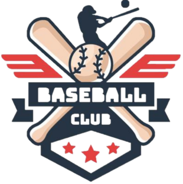
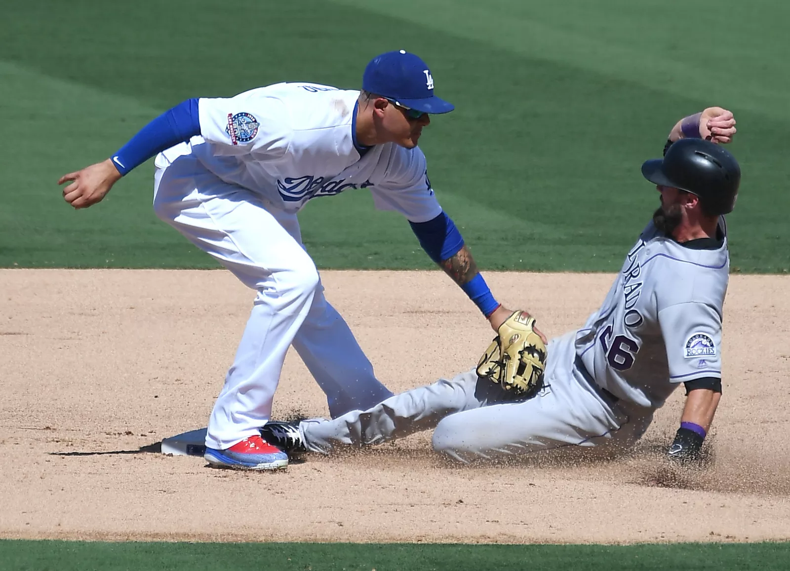
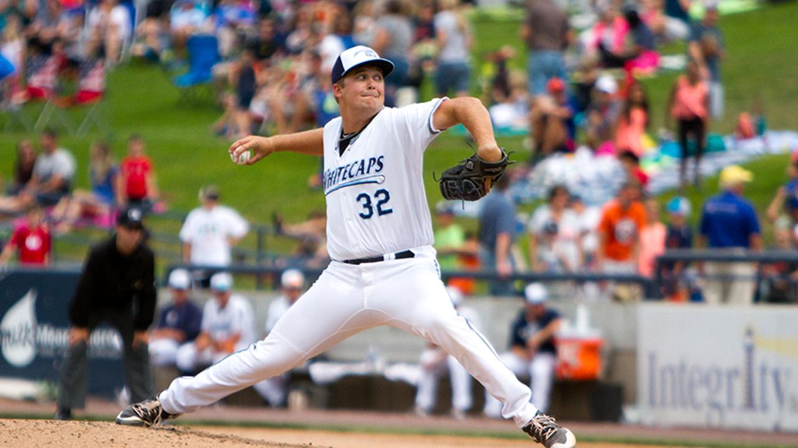
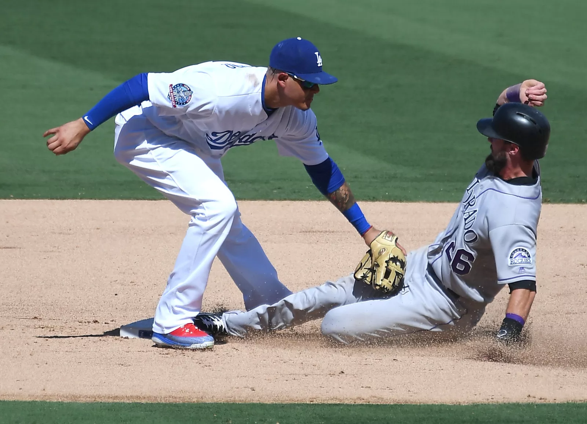
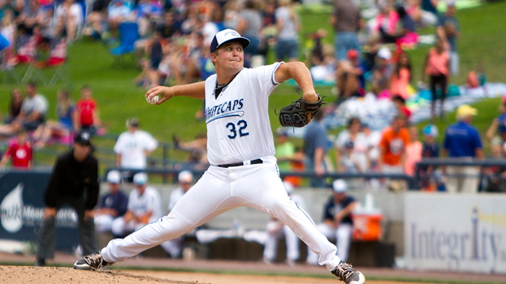

Baseball Experience
History: Baseball is a bat-and-ball game played between two opposing teams who take turns batting and fielding. The game proceeds when a player on the fielding team, called the pitcher, throws a ball which a player on the batting team tries to hit with a bat. The objectives of the offensive team (batting team) are to hit the ball into the field of play, and to run the bases—having its runners advance counter-clockwise around four bases to score what are called "runs". The objective of the defensive team (fielding team) is to prevent batters from becoming runners, and to prevent runners' advance around the bases. A run is scored when a runner legally advances around the bases in order and touches home plate (the place where the player started as a batter). The team that scores the most runs by the end of the game is the winner.
Rules: A baseball game is played between two teams, each composed of nine players, that take turns playing offense (batting and baserunning) and defense (pitching and fielding). A pair of turns, one at bat and one in the field, by each team constitutes an inning. A game consists of nine innings (seven innings at the high school level and in doubleheaders in college and minor leagues, and six innings at the Little League level). One team—customarily the visiting team—bats in the top, or first half, of every inning. The other team—customarily the home team—bats in the bottom, or second half, of every inning. The goal of the game is to score more points (runs) than the other team. The players on the team at bat attempt to score runs by circling or completing a tour of the four bases set at the corners of the square-shaped baseball diamond. A player bats at home plate and must proceed counterclockwise to first base, second base, third base, and back home to score a run. The team in the field attempts to prevent runs from scoring and record outs, which remove opposing players from offensive action until their turn in their team's batting order comes up again.
When three outs are recorded, the teams switch roles for the next half-inning. If the score of the game is tied after nine innings, extra innings are played to resolve the contest. Many amateur games, particularly unorganized ones, involve different numbers of players and innings. The game is played on a field whose primary boundaries, the foul lines, extend forward from home plate at 45-degree angles. The 90-degree area within the foul lines is referred to as fair territory; the 270-degree area outside them is foul territory. The part of the field enclosed by the bases and several yards beyond them is the infield; the area farther beyond the infield is the outfield. In the middle of the infield is a raised pitcher's mound, with a rectangular rubber plate (the rubber) at its center. The outer boundary of the outfield is typically demarcated by a raised fence, which may be of any material and height. The fair territory between home plate and the outfield boundary is baseball's field of play, though significant events can take place in foul territory, as well.
 


